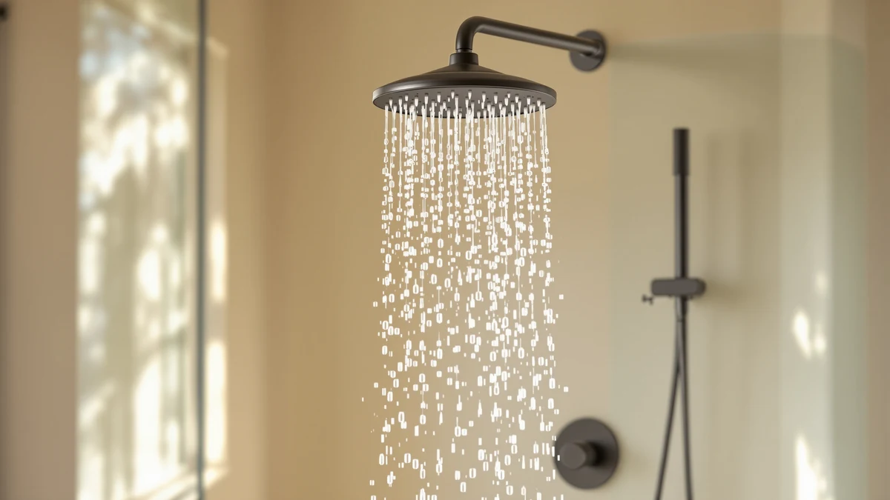

Best Kids Rainfall Shower Heads of 2026: 7 Top Picks
Prices and picks verified as of August 2026. Independent, reader-supported reviews.


Quick Answer
The HammerHead Showers Solid Metal 8 is the best kids rainfall shower head for most families in 2026. Its wide 8-inch face and full 2.5 GPM flow rinse a child head to toe in one pass, and the metal body survives the knocks that crack cheaper plastic heads. Budget shoppers can get a workable rainfall setup from the $19.99 UltrTxenova dual head instead.
Our pick: HammerHead Showers® Solid Metal 8, $99.95 Check Price on Amazon
Bottom line: our top pick is the HammerHead Showers® Solid Metal 8 Inch Rainfall Shower Head at $99.95. The best budget option is the High Pressure Fixed Showerheads at $8.90.
Things to Know Before You Buy
- Coverage matters more than pressure for kids. A wide rainfall face wets a child's whole body at once, which cuts rinse time and squirming. Our top pick uses an 8-inch face for that reason.
- Check the flow rate. US rules cap shower heads at 2.5 gallons per minute. Two of our picks, the HammerHead Solid Metal 8 and the GRICH, list the full 2.5 GPM, which keeps a kids rainfall shower head from thinning into a drizzle.
- A handheld wand helps with toddlers. The $19.99 UltrTxenova pairs a fixed head with a handheld, so you can aim water away from a nervous child's face during hair rinses.
- Prices in this guide run from $9.20 to $99.95. The gap buys build quality. The $9.20 VRQUB works as a trial run, while the HammerHead models cost more because of their metal construction.
The best kids rainfall shower heads make bath time easier because a wide, soft spray feels like warm rain instead of a needle-jet blast on a child's skin. We compared seven rainfall models for this guide, from a $9.20 five-mode budget head to a $99.95 metal-bodied flagship, and ranked them on spray coverage and flow rate, then on how well each one handles a wiggly kid at rinse time.
The HammerHead Showers Solid Metal 8 came out on top. Its 8-inch face throws a curtain of water wide enough to rinse shampoo out of a child's hair in one pass, and it holds the full 2.5 GPM flow that federal rules allow. The metal body stands up to the door slams and dropped toys of a kids' bathroom. At $99.95 it costs more than any other pick here, and the price case rests on durability: buy one metal head instead of replacing plastic ones.
Plenty of families should spend less than $100 on a kids rainfall shower head. The $44.99 INAVAMZ runner-up delivers a stronger rain pattern for thick hair, and the $19.99 UltrTxenova adds a handheld wand that toddler parents will use daily. The $9.20 VRQUB gives you five spray modes for less than the cost of a pizza. Pick by budget and by how much aiming control your child needs.
Why You Should Trust Us
I'm Ilane Tall, and I write the reviews on Best Shower Heads. I spend my working week comparing spray patterns, flow ratings, warranty terms, and owner feedback across the shower head market, and I have covered dozens of rainfall models on this site, including our main rainfall shower heads guide. For this kids rainfall shower heads roundup I weighted the factors that matter with children in the shower: spray softness and coverage width first, then whether a parent can work the controls one-handed. I name the flaws of each pick next to its strengths, and when a $20 head covers the same needs as a $100 one, I say so. We earn a commission on Amazon purchases made through our links, and that commission has no effect on the rankings.
How We Picked
We started with the rainfall models in our research database and cut the field down to the heads that work as kids rainfall shower heads. A model needed a rain-style face rather than a narrow jet pattern, at a price a family could justify for a kids' bathroom. It also had to install on a standard shower arm without a plumber. We favored heads with a listed flow rate, since a rainfall pattern at low flow turns into a weak drizzle that leaves shampoo in thick hair.
We also wanted a spread of designs: a durable fixed head for families tired of replacing cracked plastic, and a dual head with a handheld wand for toddler duty. At least one pick had to come in under $10, for parents who want to test whether their kids like rainfall spray before spending more. Seven models made the cut.
How We Compared
We ran each finalist through the same checklist. We compared spray coverage relative to face size, since an 8-inch head mounted at a standard height covers a child's head and shoulders while a 6-inch head covers a smaller circle. We compared listed flow rates against the 2.5 GPM federal cap and flagged models that publish no rating at all. On the multi-mode picks, such as the five-mode VRQUB, we considered how easily a parent could switch from rain to a gentler setting mid-shower with wet hands.
We then read through owner feedback on each model for the failure patterns that spec sheets hide: cracked plastic threads, finishes that peel, and clogged nozzles in hard-water homes. A kids rainfall shower head takes more abuse than one in an adult bathroom, so durability complaints weighed heavily in the final order.
Our Picks

HammerHead Showers® Solid Metal 8
What we like
- 8-inch face rinses a child's hair and shoulders in one pass
- Full 2.5 GPM flow keeps the rain pattern dense instead of drizzly
- Metal construction handles knocks that crack plastic heads
- One-piece fixed design gives kids nothing to snap off
Flaws but not dealbreakers
- At $99.95, it costs ten times our budget pick
- No handheld wand, so toddler rinse-downs take more maneuvering
| Material | ABS + chrome plating |
| Size | 2.5 GPM |
The HammerHead Showers Solid Metal 8 earns the top spot in this kids rainfall shower heads guide on two numbers: an 8-inch spray face and a 2.5 GPM flow rate. Together they produce the effect kids respond to, a wide and steady sheet of warm water rather than a sparse patter. Your child stands under it and gets wet everywhere at once, which shortens hair rinses and ends the dance where a kid rotates under a narrow spray one limb at a time.
The metal build is the reason we accept the $99.95 price. Kids' bathrooms destroy hardware, and a plastic rain head that takes a hit from a shower caddy or a thrown toy tends to crack at the neck. Buy the HammerHead once and you skip that replacement cycle. The flaws are the flip side of the design: there is no handheld wand for aiming water away from a nervous toddler's face, and the price stings when the $9.20 VRQUB at the bottom of this list also sprays rain-style water. For most families with kids past the toddler stage, we think the durability math works out.

INAVAMZ High Pressure Rain Shower
What we like
- High-pressure rain pattern clears shampoo faster than gentler heads
- $44.99 lands well under the HammerHead models
- Chrome finish wipes clean after hard-water spotting
Flaws but not dealbreakers
- The stronger spray can feel intense on a toddler's skin
- The listing publishes no flow rate, so output in a low-pressure home is a guess
| Material | ABS + chrome plating |
| Size | — |
The INAVAMZ High Pressure Rain Shower answers the main complaint against rainfall heads for kids: long hair that holds shampoo. Standard rain patterns favor softness over force, and parents of kids with thick curls end up rinsing twice. This head keeps the wide rain-style coverage while pushing the water harder, so conditioner comes out on the first pass instead of the third.
At $44.99 it costs less than half of our top pick, and for many families that trade reads well: you give up the HammerHead's metal body and accept a chrome-plated build, but you keep wide coverage and gain rinsing force. Two cautions kept it in the runner-up slot. The extra pressure that helps with thick hair can overwhelm a toddler who already dislikes water on their face, and INAVAMZ does not publish a flow rate, which makes performance in low-pressure homes hard to predict. If your kids are past the sensitive stage and grow serious hair, start here.

GRICH 2.5GPM Shower Head with
What we like
- Lists the full 2.5 GPM flow, matching our $99.95 top pick
- $33.22 makes it the cheapest full-flow head in this guide
- Lightweight chrome-plated build suits older shower arms
Flaws but not dealbreakers
- GRICH lacks the track record of a brand like HammerHead
- Fixed mount with no handheld option for toddler duty
| Material | ABS + chrome plating |
| Size | 2.5 GPM |
The GRICH 2.5GPM Shower Head hits the number that matters most in a kids rainfall setup: the full 2.5 gallons per minute that US rules allow. Flow separates a rain shower kids enjoy from one they complain about, since a starved rain pattern feels thin and cools fast on small bodies. Only one other pick in this guide lists that figure, and it costs three times as much.
At $33.22, the GRICH occupies the sensible middle of this list. You get the flow of the HammerHead without the metal body or the price, and you accept the usual trades of a lightweight chrome-plated head: it will not take impacts the way solid metal does, and GRICH as a brand carries less history if you ever need warranty help. Owners rate it 4 stars, in line with the rest of this field. For a hall bathroom the kids will outgrow in a few years, spending $33 here instead of $100 on the HammerHead is a defensible call.

dual shower head with handheld
What we like
- Handheld wand lets you aim water away from a child's face
- Fixed head plus wand covers kids at different ages and heights
- $19.99 buys the whole two-head setup
Flaws but not dealbreakers
- Plastic construction at this price will not match the HammerHead's lifespan
- UltrTxenova is an unknown brand with a thin support record
| Material | ABS + chrome plating |
| Size | — |
The UltrTxenova dual shower head with handheld solves the toddler problem the fixed heads above cannot: a two-year-old who screams when water hits their face. The handheld wand detaches so you control where the water goes, rinsing hair backward over the tub edge while the overhead rain head stays off or runs for an older sibling. One $19.99 purchase covers both jobs.
We ranked it as our budget pick rather than higher because the compromises match the price. The plastic build sits in a different class from the HammerHead's metal, and the brand has no track record to lean on if a diverter fails. Dual-head designs also split water between outlets, so neither head matches the intensity of a single dedicated unit. Treat it as the right head for the toddler years, with a plan to move up to a single rainfall head once your kids can rinse their own hair. Our dual shower heads guide covers sturdier two-head setups if this style sticks.

HammerHead Showers® SOLID METAL 8
What we like
- Same 8-inch solid metal design approach as our top pick
- $84.95 undercuts the flagship by $15
- Fixed one-piece build with nothing for kids to break
Flaws but not dealbreakers
- Still a premium price for a kids' bathroom
- Differences from the $99.95 version are small enough to cause second-guessing
| Material | ABS + chrome plating |
| Size | — |
HammerHead's second entry, the SOLID METAL 8 at $84.95, exists for the shopper who read our top pick's writeup, agreed with the metal-over-plastic logic, and then flinched at the price. You get the same brand, the same 8-inch rainfall format, and the same one-piece durability pitch for $15 less.
The awkward part is choosing between the two HammerHead variants, since the listings differ more in finish and configuration than in concept. Our advice: match the finish to your existing fixtures and let the $15 fall where it falls, because both versions rest on the same argument, one durable kids rainfall head instead of a string of cracked plastic ones. If neither price fits a bathroom your kids will outgrow, the GRICH above delivers the same rated flow at $33.22, and you can skip the durability premium.

SparkPod Shower Head - High
What we like
- 6-inch face fits stalls and tub surrounds that dwarf bigger heads
- High-pressure rain pattern keeps rinses quick
- $37.99 sits in the affordable middle of this field
Flaws but not dealbreakers
- The 6-inch face covers less of a child than the 8-inch HammerHeads
- No handheld option for toddler rinse duty
| Material | ABS + chrome plating |
| Size | 6 Inch |
The SparkPod Shower Head brings the rainfall format down to a 6-inch face, and in a lot of kids' bathrooms that is the correct size. Hall bathrooms and tub-shower combos often mount the shower arm low and close to the wall, where an 8-inch head hangs awkwardly and sprays the curtain as much as the child. The SparkPod tucks into that space and still delivers a high-pressure rain pattern.
The size that makes it fit is also its ceiling. A 6-inch face covers a smaller circle, so a child moves around more to rinse fully, which works against the point of a rainfall head for kids. At $37.99 with 4-star owner ratings it competes directly with the $33.22 GRICH, and the choice comes down to your shower: pick the SparkPod for a cramped stall, pick the GRICH for its listed 2.5 GPM flow in a standard setup.

High Pressure Fixed Showerheads 5-Mode
What we like
- Five spray modes include gentler settings for sensitive kids
- $9.20 makes a failed experiment painless
- Mode dial lets one head serve a toddler and a preteen
Flaws but not dealbreakers
- Build quality at $9.20 will not survive years of kid abuse
- VRQUB is an unknown brand with no support history
| Material | ABS + chrome plating |
| Size | — |
The VRQUB High Pressure Fixed Showerhead costs $9.20, and at that price it answers a different question than the rest of this list. Forget "which rainfall head should I buy"; the question here is "will my kids even like rainfall spray". Its five modes let you dial between a rain-style pattern and firmer settings, so a cautious four-year-old and a shampoo-caked ten-year-old can share the same head with a twist of the face.
Go in with matched expectations. A $9.20 head uses the lightest materials in this guide, and the VRQUB brand offers no track record. We would not bet on it lasting through years in a kids' bathroom. That is fine, because its job is reconnaissance. Install it, watch whether rain-style spray ends the bath-time complaints, and if it does, put the savings toward the HammerHead or the GRICH knowing the format works for your kids. As a permanent pick it ranks last here; as a $9 experiment it might be the smartest purchase on the page.
Quick Comparison
| Product | Material | Price | Rating | Best for | Get it |
|---|---|---|---|---|---|
| HammerHead Showers® Solid Metal 8 | ABS + chrome plating | $99.95 | 4 | Most families, the top kids rainfall pick overall | View on Amazon → |
| INAVAMZ High Pressure Rain Shower | ABS + chrome plating | $44.99 | 4 | Thick or long hair that needs rinsing power | View on Amazon → |
| GRICH 2.5GPM Shower Head with | ABS + chrome plating | $33.22 | 4 | Full 2.5 GPM flow on a budget | View on Amazon → |
| dual shower head with handheld | ABS + chrome plating | $19.99 | 4 | Toddlers who need a handheld wand | View on Amazon → |
| HammerHead Showers® SOLID METAL 8 | ABS + chrome plating | $84.95 | 4 | HammerHead durability for $15 less | View on Amazon → |
| SparkPod Shower Head - High | ABS + chrome plating | $37.99 | 4 | Small stalls and tub-shower combos | View on Amazon → |
| High Pressure Fixed Showerheads 5-Mode | ABS + chrome plating | $9.20 | 4 | A cheap trial of rainfall spray | View on Amazon → |
Are rainfall shower heads good for kids?
Yes, for most kids past the toddler stage.
What flow rate should a kids rainfall shower head have?
Look for the full 2.5 gallons per minute, the maximum US rules allow.
The Competition
We looked at more models than these seven before settling on our kids rainfall shower heads lineup, and most of the cuts fell into predictable groups. Character-themed novelty heads aimed at kids photograph well and spray poorly; the ones we reviewed traded flow for gimmicks, and kids outgrow the cartoon long before the hardware wears out. LED color-changing rain heads had the same problem with extra failure points, since the light turbines sit directly in the water path.
Ceiling-mounted rainfall panels deliver the most dramatic rain effect, and we cut them anyway because they demand in-wall plumbing work that makes no sense for a bathroom kids will use for a decade at most. Filtered rainfall models earn a place in hard-water homes, but the cartridge costs change the math enough that they deserve their own comparison, which lives in our filtered rainfall shower heads guide. Several no-name rain heads under $15 also lost out to the VRQUB, which matched their prices with more spray modes and better owner ratings.
Frequently Asked Questions
Are rainfall shower heads good for kids?
Yes, for most kids past the toddler stage. A rainfall pattern spreads water over a wide, soft area instead of narrow jets, which feels gentler on skin and rinses hair faster. For toddlers who dislike water on their face, pair the rain head with a handheld wand like the $19.99 UltrTxenova so you can control the aim.
What flow rate should a kids rainfall shower head have?
Look for the full 2.5 gallons per minute, the maximum US rules allow. Rainfall faces spread water across a wide area, so a low flow rate turns the spray thin and cold-feeling. Two of our picks, the HammerHead Solid Metal 8 and the GRICH, list the full 2.5 GPM.
Which kids rainfall shower head is the best overall?
The HammerHead Showers Solid Metal 8 is the best kids rainfall shower head we found for 2026. Its 8-inch face covers a child head to toe, it runs at the full 2.5 GPM, and its metal body outlasts the plastic heads that dominate this category. At $99.95 it costs the most in our guide, and the $33.22 GRICH is the pick if that price rules it out.